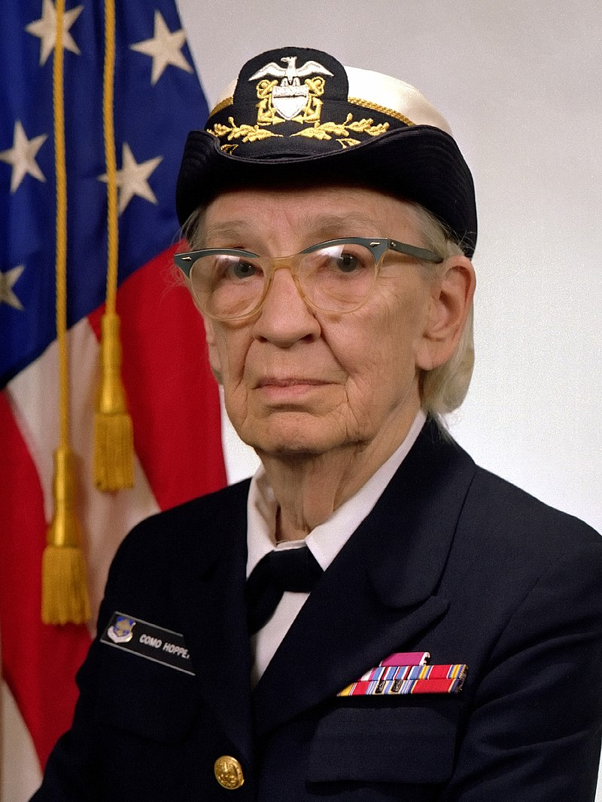

Murray Hopper (Nueva York , 9 de diciembre de 1906 - Condado de Arlington, 1 de enero de 1992) fue una científica de la computación y militar estadounidense con grado de contraalmirante. Fue pionera en el mundo de las ciencias de la computación y la primera programadora que utilizó el Mark I. Entre las décadas de los 50 y 60 desarrolló el primer compilador para un lenguaje de programación así como también propició métodos de validación. 123456
| Grace Murray Hopper | |
|  | |
| Información personal | |
| Nombre de nacimiento | Grace Brewster Murray |
| Apodo | Amazing Grace |
| Nacimiento | 9 de diciembre de 1906 Ver y modificar los datos en Wikidata Nueva York (Estados Unidos) |